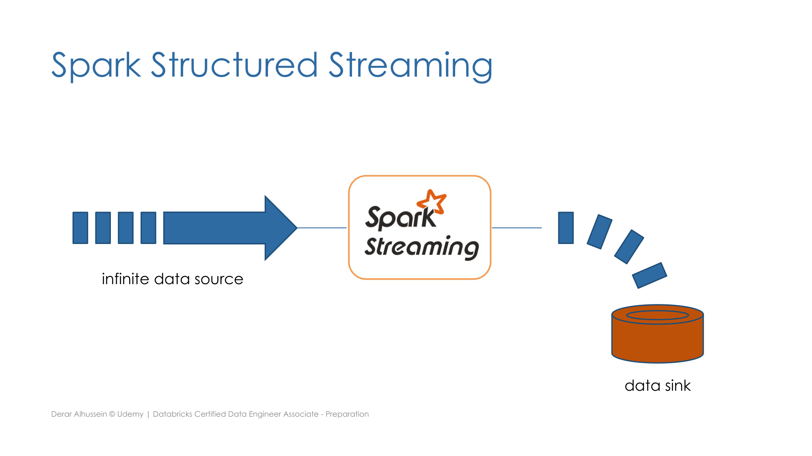
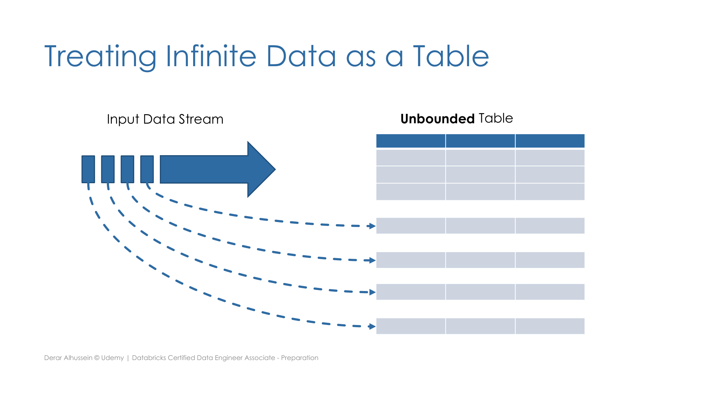
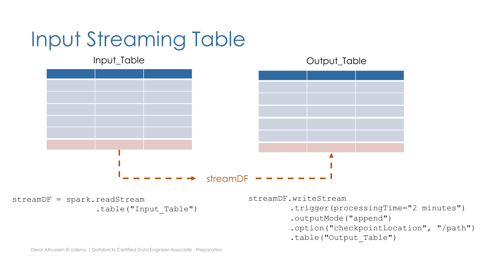

Section 3 · Data Transformation and Modelling · Quelle: Udemy-Kursmaterial „Structured Streaming“, ergänzt mit Databricks-Dokumentation
Section 2 hat Auto Loader bereits im Kontext der Datei-Ingestion mit spark.readStream gezeigt, und Kapitel 1 dieser Section erwähnt Streaming Tables als Gold-Layer-Objekt. Dieses Kapitel liefert das fehlende Bindeglied dazwischen: die generische Spark-Structured-Streaming-API selbst – DataStreamReader und DataStreamWriter – unabhängig davon, ob die Quelle eine Datei, ein Delta-Table oder ein Message-Bus ist.
Ein Datenstrom ist jede Datenquelle, die kontinuierlich wächst – etwa neue JSON-Dateien, die in Cloud-Speicher landen, per CDC erfasste Datenbankänderungen, oder Ereignisse in einer Pub/Sub-Warteschlange wie Kafka. Um solche Quellen zu verarbeiten, gibt es grundsätzlich zwei Ansätze: den kompletten Datensatz bei jeder Aktualisierung neu zu verarbeiten, oder gezielt nur die seit dem letzten Lauf neu hinzugekommenen Daten zu erfassen. Spark Structured Streaming ist die Engine, die den zweiten, effizienteren Ansatz umsetzt.

Der zentrale Kunstgriff von Structured Streaming: Ein kontinuierlich wachsender Datenstrom wird intern wie eine ganz normale, aber unbegrenzte Tabelle („unbounded table“) behandelt. Jede neue Dateneinheit im Stream entspricht schlicht einer neuen Zeile, die dieser Tabelle angehängt wird. Dadurch lassen sich auf einem Streaming-DataFrame nahezu dieselben Transformationen anwenden wie auf einem gewöhnlichen, statischen DataFrame.

Delta-Tabellen lassen sich direkt als Streaming-Quelle verwenden: spark.readStream liest dabei nicht nur die bereits vorhandenen, sondern auch alle künftig hinzukommenden Zeilen der Quelltabelle. Das Ergebnis ist ein Streaming-DataFrame, das sich mit writeStream in eine Zieltabelle schreiben lässt:
streamDF = spark.readStream.table("Input_Table")
streamDF.writeStream \
.trigger(processingTime="2 minutes") \
.outputMode("append") \
.option("checkpointLocation", "/path") \
.table("Output_Table")

Die trigger-Methode legt fest, wann Structured Streaming nach neuen Daten sucht und diese verarbeitet:
| Trigger | Aufruf | Verhalten |
|---|---|---|
| Nicht angegeben | – | Standard: alle 500 ms prüfen (Micro-Batch) |
| Fixes Intervall | .trigger(processingTime="5 minutes") | Verarbeitung in Micro-Batches im angegebenen Intervall |
| Getriggerter Batch | .trigger(availableNow=True) | Verarbeitet alle verfügbaren Daten (in mehreren Micro-Batches) und stoppt danach von selbst |
Beide getriggerten Varianten eignen sich für inkrementelle Batch-Verarbeitung (siehe Section 2, Kapitel 8): Der Stream läuft, verarbeitet alle aktuell vorhandenen neuen Daten und beendet sich danach automatisch, statt dauerhaft weiterzulaufen.
| Modus | Aufruf | Verhalten |
|---|---|---|
| Append (Standard) | .outputMode("append") | Nur neu hinzugekommene Zeilen werden inkrementell an die Zieltabelle angehängt |
| Complete | .outputMode("complete") | Die Zieltabelle wird bei jedem Batch komplett neu berechnet und überschrieben |
Über die Option checkpointLocation speichert Databricks den aktuellen Zustand eines Streaming-Jobs im Cloud-Speicher. Dieser Checkpoint erlaubt es der Engine, den Verarbeitungsfortschritt nachzuvollziehen – und nach einem Ausfall genau dort fortzusetzen, wo der Stream aufgehört hat. Wichtig für die Praxis: Ein Checkpoint kann nicht zwischen mehreren Streams geteilt werden – jeder einzelne Schreibvorgang (writeStream) benötigt einen eigenen, exklusiven Checkpoint-Pfad.
Structured Streaming bietet zwei zentrale Garantien:
Beide Garantien setzen voraus, dass die Quelle wiederholbar ist (z. B. Cloud-Objektspeicher oder ein Pub/Sub-Dienst mit Offset-Verwaltung) – erst das Zusammenspiel aus wiederholbarer Quelle und idempotenter Senke ermöglicht echte Exactly-Once-Semantik über beliebige Fehlerfälle hinweg.
Auf einem Streaming-DataFrame lassen sich zwar die meisten Operationen genauso anwenden wie auf einem statischen DataFrame – einige Ausnahmen bestehen jedoch: Sortierung und Deduplizierung (siehe Section 3, Kapitel 13 zur Deduplizierung auf statischen DataFrames) sind auf einem unbegrenzten Datenstrom entweder zu aufwendig oder logisch nicht direkt möglich, da der vollständige Datensatz nie gleichzeitig vorliegt. Für solche Anwendungsfälle bietet Spark fortgeschrittene Methoden wie Windowing und Watermarking an, die zeitlich begrenzte Ausschnitte des Streams betrachten.
trigger(once=True) gilt seit Databricks Runtime 11.3 LTS als deprecated – Databricks empfiehlt für sämtliche inkrementelle Batch-Workloads stattdessen durchgängig trigger(availableNow=True), das inhaltlich denselben Zweck erfüllt (alle verfügbaren Daten verarbeiten, dann stoppen), dabei aber die Datenmenge in mehrere, besser steuerbare Micro-Batches aufteilen kann statt alles in einem einzigen Batch zu verarbeiten. Die Option checkpointLocation ist bei Verwendung von trigger(availableNow=True) zwingend erforderlich, damit jeder Lauf nachvollziehen kann, wo der vorherige Lauf aufgehört hat.